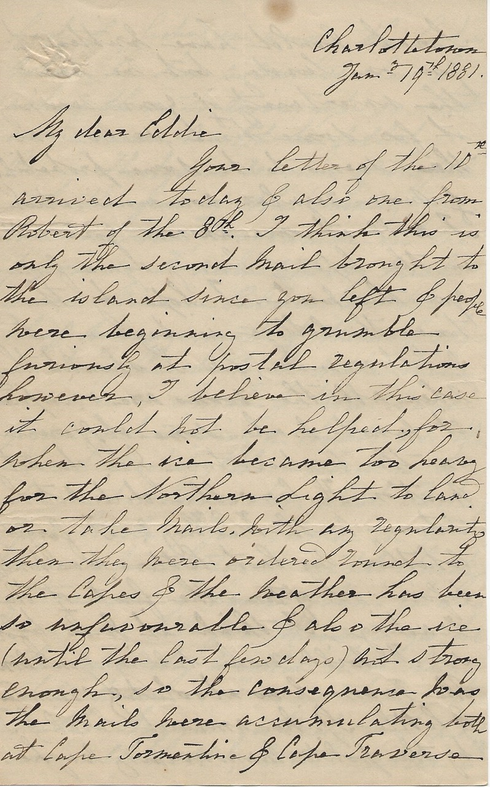

Charlottetown
Jan. 19th, 1881.
My dear Eddie
Your letter of the 10th arrived today & also one from Robert of the 8th. I think this is only the second mail brought to the island since you left & people are beginning to grumble furiously at the postal regulations however, I believe in this case it could not be helped, for, when the ice became too heavy for the Northern Light to land or take mails, with any regularity then they were ordered round to the Capes & the weather has been so unfavourable & also the ice (until the last few days) not strong enough, so the consequence was the mails were accumulating both at Cape Tormentine & Cape Traverse.
Sarah would have written to you on Sunday, but we know the uncertainty of receiving it for some time, so now as there seems to be some probability of more regular communication I will at once answer your letter in the hope of hearing again from you this week. I hope by this time the College is beginning to feel warmer, for I shouldn’t think when all the rooms are occupied it must make some difference in the temperature.
You do not mention H. Carvell - did not he return with W. King? I forget whether my last letter was written before or after the first of the readings, I think it was before, so I will finish telling you now. The room was absolutely crammed & little Spike amused Sarah & I by the polite maneuvering way he had of gliding in among the ladies when he saw a vacant chair & asking them to move up so that every corner might be filled - Rev. G. Hodgson’s reading was the gem of the evening; you will see the program in the paper so I need not say much more. Minnie Palmer has the chief management of them & she is doing her best to make them a success. Sarah & Etta have promised to sing a duet at the third reading; the second is to be next Wednesday.
Last Friday your Uncle Joe came in & were storm stayed until Sunday afternoon & even then it was scarcely fit for them to go, but the next day would have been still worse. I was taking tea with Maggie yesterday, the children are all well, little Walter is very amusing now, singing bits of many of the nursery rhymes, & Winnie tells most wonderful tales about wolfs & stags & pigs she gets quite conceited over her own inventions. Will Cotton was quite ill last week, but is now all right again.
I am just undergoing all the dis-agreeables of getting a new servant into the ways of the house Jessie took her departure the night before last & the one we have now is a young girl with whom I had a good character & I hope she will suit, she has an uncommon name Hortense but we call her Tenssie. Your Papa & Willie have hopes of selling the two horses to Mr. Newson & if he does not take them, Jennie Waddell has offered $75 for the red one.
I feel very tired tonight so will not write more. All unite in best love with your loving Mother S. Harris